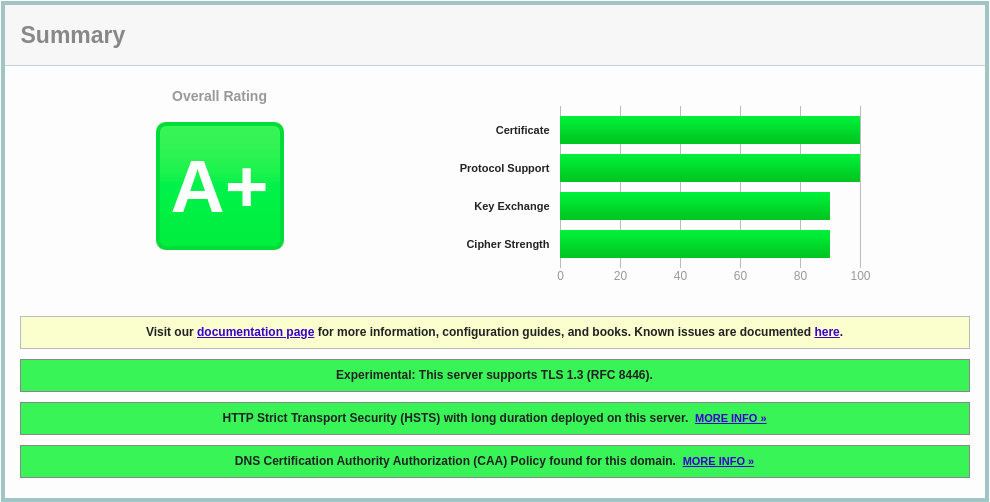

在 CentOS 8 上为 Apache 配置 Let's Encrypt SSL 证书
Let’s Encrypt 是由 Internet 安全研究组 (ISRG) 开发的免费，自动化和开放的证书颁发机构，它提供免费的 SSL 证书。
Let’s Encrypt 颁发的证书受到所有主要浏览器的信任，并且自颁发之日起有效期为 90 天。
本教程说明了如何在运行 Apache 作为 Web 服务器的 CentOS 8 上安装免费的 Let’s Encrypt SSL 证书。我们还将使用 certbot 工具获取并更新证书。
先决条件
在继续之前，请确保满足以下先决条件：
- 有一个指向您的公共服务器 IP 的域名。我们将使用
example.com。 - 已经在 CentOS 8 上 安装了 Apache 并在服务器上运行，并为您的域配置了虚拟主机。
- 已经在防火墙中打开了端口 80 和 443 。
安装 Web 服务器所需的 SSL 加密相关的软件包：
sudo dnf install mod_ssl openssl
安装 mod_ssl 软件包后，应为本地主机创建一个自签名的密钥和证书文件。如果没有自动创建文件，则可以使用以下 openssl 命令创建文件：
sudo openssl req -newkey rsa:4096 -x509 -sha256 -days 3650 -nodes \
-out /etc/pki/tls/certs/localhost.crt \
-keyout /etc/pki/tls/private/localhost.key
安装 Certbot
Certbot 是一个免费的命令行工具，可简化从服务器获取和续订 Let’s Encrypt SSL 证书并自动启用 HTTPS 的过程。
certbot 软件包不包含在标准 CentOS 8 存储库中，但可以从供应商的网站上下载。
以 root 或 sudo 用户身份运行以下 wget 命令，将 certbot 脚本下载到该 /usr/local/bin 目录：
sudo wget -P /usr/local/bin https://dl.eff.org/certbot-auto
下载完成后，使文件可执行：
sudo chmod +x /usr/local/bin/certbot-auto
产生强 Dh(Diffie-Hellman) 组
Diffie-Hellman 密钥交换 (DH) 是一种在不安全的通信通道上安全地交换加密密钥的方法。生成一组新的 2048 位 DH 参数以增强安全性：
sudo openssl dhparam -out /etc/ssl/certs/dhparam.pem 2048
您最多可以更改为 4096 位大小，但是生成时间可能会超过 30 分钟，具体取决于系统的处理能力。
获取 Let’s Encrypt SSL 证书
为了获得该域的 SSL 证书，我们将使用 Webroot 插件，该插件通过在 ${webroot-path}/.well-known/acme-challenge 目录中创建用于验证请求的域的临时文件来工作。 Let’s Encrypt 服务器对临时文件发出 HTTP 请求，以验证请求的域是否解析为 certbot 运行的服务器。
为了简化设置，我们将所有对 .well-known/acme-challenge 的 HTTP 请求映射到一个目录 /var/lib/letsencrypt 。
运行以下命令以创建目录并使该目录可用于 Apache 服务器。
sudo mkdir -p /var/lib/letsencrypt/.well-known
sudo chgrp apache /var/lib/letsencrypt
sudo chmod g+s /var/lib/letsencrypt
为避免重复代码并使配置更易于维护，请创建以下两个配置片段：
文件: /etc/httpd/conf.d/letsencrypt.conf
Alias /.well-known/acme-challenge/ "/var/lib/letsencrypt/.well-known/acme-challenge/"
<Directory "/var/lib/letsencrypt/">
AllowOverride None
Options MultiViews Indexes SymLinksIfOwnerMatch IncludesNoExec
Require method GET POST OPTIONS
</Directory>
文件: /etc/httpd/conf.d/ssl-params.conf
SSLCipherSuite EECDH+AESGCM:EDH+AESGCM
# Requires Apache 2.4.36 & OpenSSL 1.1.1
SSLProtocol -all +TLSv1.3 +TLSv1.2
SSLOpenSSLConfCmd Curves X25519:secp521r1:secp384r1:prime256v1
# Older versions
# SSLProtocol All -SSLv2 -SSLv3 -TLSv1 -TLSv1.1
SSLHonorCipherOrder On
Header always set Strict-Transport-Security "max-age=63072000; includeSubDomains; preload"
Header always set X-Frame-Options DENY
Header always set X-Content-Type-Options nosniff
# Requires Apache >= 2.4
SSLCompression off
SSLUseStapling on
SSLStaplingCache "shmcb:logs/stapling-cache(150000)"
# Requires Apache >= 2.4.11
SSLSessionTickets Off
SSLOpenSSLConfCmd DHParameters "/etc/ssl/certs/dhparam.pem"
上面的代码段使用的是 Cipherli.st 建议的配置段。它启用 OCSP 装订， HTTP 严格传输安全性 (HSTS) ， Dh 密钥，并强制执行少量以安全性为重点的 HTTP 标头。
重新加载 Apache 配置以使更改生效：
sudo systemctl reload httpd
现在，您可以使用 webroot 插件运行 certbot 脚本并获取 SSL 证书文件：
sudo /usr/local/bin/certbot-auto certonly --agree-tos --email admin@example.com --webroot -w /var/lib/letsencrypt/ -d example.com -d www.example.com
成功后， certbot 将打印以下消息：
IMPORTANT NOTES:
- Congratulations! Your certificate and chain have been saved at:
/etc/letsencrypt/live/example.com/fullchain.pem
Your key file has been saved at:
/etc/letsencrypt/live/example.com/privkey.pem
Your cert will expire on 2020-01-26\. To obtain a new or tweaked
version of this certificate in the future, simply run certbot-auto
again. To non-interactively renew *all* of your certificates, run
"certbot-auto renew"
- Your account credentials have been saved in your Certbot
configuration directory at /etc/letsencrypt. You should make a
secure backup of this folder now. This configuration directory will
also contain certificates and private keys obtained by Certbot so
making regular backups of this folder is ideal.
- If you like Certbot, please consider supporting our work by:
Donating to ISRG/Let's Encrypt: https://letsencrypt.org/donate
Donating to EFF: https://eff.org/donate-le
现在已完成所有设置，按如下所示编辑域虚拟主机配置 /etc/httpd/conf.d/example.com.conf：
<VirtualHost *:80>
ServerName example.com
ServerAlias www.example.com
Redirect permanent/https://example.com/
</VirtualHost>
<VirtualHost *:443>
ServerName example.com
ServerAlias www.example.com
Protocols h2 http:/1.1
<If "%{HTTP_HOST} == 'www.example.com'">
Redirect permanent/https://example.com/
</If>
DocumentRoot /var/www/example.com/public_html
ErrorLog /var/log/httpd/example.com-error.log
CustomLog /var/log/httpd/example.com-access.log combined
SSLEngine On
SSLCertificateFile /etc/letsencrypt/live/example.com/fullchain.pem
SSLCertificateKeyFile /etc/letsencrypt/live/example.com/privkey.pem
# Other Apache Configuration
</VirtualHost>
上面的配置是强制使用 HTTPS 并从 www 重定向到非 www 版本。它还启用 HTTP/2 ，这将使您的网站更快，更健壮。请根据您自己的需要调整配置。
重新启动 Apache 服务：
sudo systemctl restart httpd
现在，您可以使用打开您的网站 https:// ，您会注意到一个绿色的锁图标。
如果您使用 SSL Labs Server Test 测试您的域，则将获得 A+ 等级，如下所示：

自动更新 Let’s Encrypt SSL 证书
Let’s Encrypt 的证书有效期为 90 天。要在证书过期之前自动更新证书，请创建一个每天运行两次的 cronjob ，并在证书过期前 30 天自动更新证书。
运行以下命令以创建一个新的 cronjob ，它将更新证书并重新启动 Apache ：
echo "0 0,12 * * * root python3 -c 'import random; import time; time.sleep(random.random() * 3600)' && /usr/local/bin/certbot-auto -q renew --renew-hook \"systemctl reload httpd\"" | sudo tee -a /etc/crontab > /dev/null
要测试续订过程，请使用 certbot --dry-run 命令：
sudo /usr/local/bin/certbot-auto renew --dry-run
如果没有错误，则表示更新过程成功。
结论
在本教程中，我们讨论了如何在 CentOS 上使用 Let’s Encrypt 客户端 certbot 获得您域的 SSL 证书；还展示了如何配置 Apache 以使用证书，以及如何设置 cronjob 来自动更新证书。